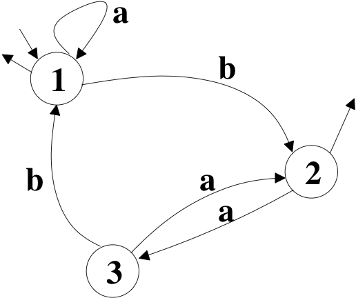

Automata
A finite automaton is a 5-tuple A = (Q, V, T, I, F) where :
- Q is a finite non empty set of states,
- V is a finite non empty set of inputs,
- T is a subset of QxVxQ, called set of transitions,
- I is a non empty subset of Q, called set of initial states,
- F is a subset of Q called set of final states.
A word w = w1,w2, .., wn on V is said accepted
by A iff it exists a path p = p0,p1,p2,...,pn from a state i of I to a
state f of F where
each pi is a state of Q, p0 = i, pn = f, and for each i, it exists a
transition t = (pi-1, wi, pi) in T.
An automaton is said deterministic
iff
- I is a singleton,
- for each triplet (s1, x, s2) in QxVxQ, it exists at most one
transition (s1, x, s2) in T.
An automaton is generally represented using a directed grph. States are
the vertices of the graph. The transitions are represented by directed
labeled edges, using the corresponding label from V. Inital states are
indicated by an incoming arrow on the state and final states by an
outgoing arrow. The following figure represents the automaton A = (Q =
{1, 2, 3}, V = {a, b}, T = {(1,a,1), (1,b,2), (2,a,3), (3,a,2),(3,b1)},
I = {1}, F = {1,2}}. The word abab
is recognized by A, but not the word aba
(3 is not final) or abb
(there is no transition from state 2 with label b).

We consider the interfaces State and Transition and the class DeterministicAutomaton.
Part 1 : Finite State Automaton
- Complete the class DeterministicAutomaton
with the new methods :
- public
State
initialState()
which returns the initial state of the automaton
- public
Transition
transition(State s, Object label)
which returns the transition of source s and label
label
if it exists, null
otherwise. If the state s does not
belong to the automaton, the method will thrown a java.lang.NoSuchElementException.
- public
boolean
recognize(Object [] word) and
public
boolean recognize(Iterator<Object> word)
which returns if a word is recognize by the automaton
- Add an handle in the methods recognize which
allows
to modify the behavior of that methods by inheritance when the
current state changes.
- Modify the class in such a way that DeterministicAutomaton(Transition[]
transitions) throws an exception
- NotDeterministTransitionException
if two elements of transitions have the same source and the same label,
- NotDeterministInitalStateException
if among the states source or target of a transition in transitions, it
exists more than one initial state,
- UnknownInitialStateException
if among the states source or target of a transition in transitions,
none of them is an initial state.
Remark : the exceptions
may be thrown either in the constructor or in the method addState(State e).
- Add the classes of the exceptions.
- Add two classes StateImpl
and TransitionImpl
which implement respectively State and Transition.
The instances of those two classes will be unmodifiable and the datas
will be given to the constructors.
- Add a test class.
- Modify the code in order to make generic the type of the labels
in the transitions. For exemple, the new prototype of the method label() in
the interface Transition
will become public
T
label().
The goals of the parts 2 and 3 are similar : allowing to add an action
when a transition is used during a word recognition. We will propose
two different way to answer this goal, without
changing
the code produced in the part 1. Moreover, the new
classes will not be in the same package than the classes of part 1.
Part 2 : Observable Automaton
We want to create a class ObservableAutomaton
in order to have a class of automata which will notify attached
observers each time a transition is used during a word recognition. All
the classes of this part will be in a new package observable,
except the test which will be in the default package.
- Look at the documentation of the class java.util.Observable,
especially
the method setChanged().
What
is the problem ?
- In order to solve this problem, we will use the following
solution :
- the class ObservableAutomaton
inherits only from DeterministAutomaton
;
- we add an internal static class in ObservableAutomaton
which extends Observable
and where the method notifyObservers(Object
arg) is changed by invoking the method setChanged()
before the notification ; each instance of ObservableAutomaton will
use
an instance of this internal class as variable ;
- we add a method addObserver(Observer
o) to ObservableAutomaton
which attach an observer to the automaton ;
- Create a class implemeting Observer
which print on the standard output the label of the crossed transition.
Use it in the test class to write the recognized word on the standard
output.
Part 3 : Finite State Machine
In this part, we will use an interface Action<T>. All the classes of this
part will be in a new package machine,
except the test which will be in the default package.
- Write a class TransitionWithAction<T>
which implements Transition<T>
and associates a transition t
and an action a. t and a are given at the construction.
The methods of Transition
to implement will been done by delegation to t. Moreover, TransitionWithAction
implements a method State cross()
which executes the action a
with the label of t as
argument, and returns the target of t.
- Write a class FiniteStateMachine<T>
which extends DeterministAutomaton
and which uses instances of TransitionWithAction
as transitions. When a transition of an instance of FiniteStateMachine
is used during the recognition of a word, then the method cross() on
this transition is invoked.
- Create a class implementing Action<T> which
print
a String
on the standard output. Use it in the test class to write the
recognized word on the standard output.
Conclusion
Compare the two solutions of part 2 and
3.